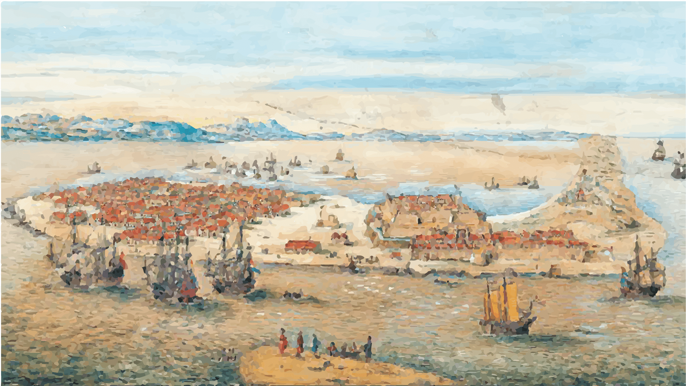
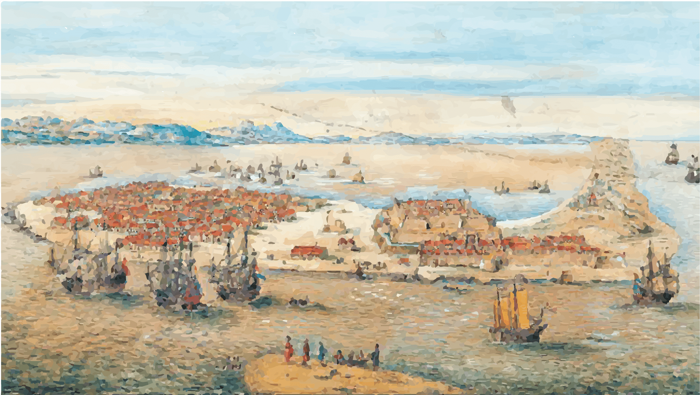

公共運輸
捷運
路線 : 搭乘捷運淡水信義線至關渡站
公車
車號：紅22
發車間距：每12-20分鐘發一班車
平日發車時間： 頭班車:0530，末班車:2330
假日發車時間： 頭班車:0545，末班車:2330
車號：紅13
發車間距：每12-20分鐘發一班車
平日發車時間： 頭班車:0625，末班車:2100
假日發車時間： 頭班車:0752，末班車:2110
渡船
價格：單程全票23元、半票12元
航班：週一 - 週五：7:00 - 20:00
全年無休(10-15分/班)
週六 - 週日：7:00 - 21:00
全年無休(3-5分/班)
自行開車
路線１：
臺北→關渡大橋→龍形路→龍米路→八里渡船頭老街
路線２：
中山高速公路→林口交流道→105線道→八里
腳踏車
租借店家：八里租借站
租借時間：
11月~3月(冬令)
平 日(星期一至星期五)：9:00-12:00，13:00-17:00
假 日(週末及國定假日)：8:00-18:00
4月~10月(夏令)
平 日(星期一至星期五)：9:00-12:00，14:00-19:00
假 日(週末及國定假日)：8:00-19:00